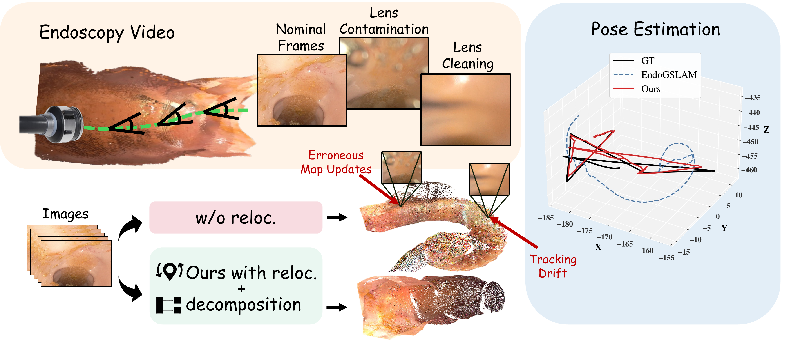
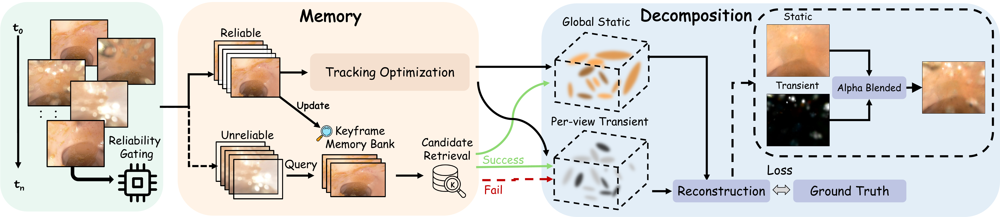
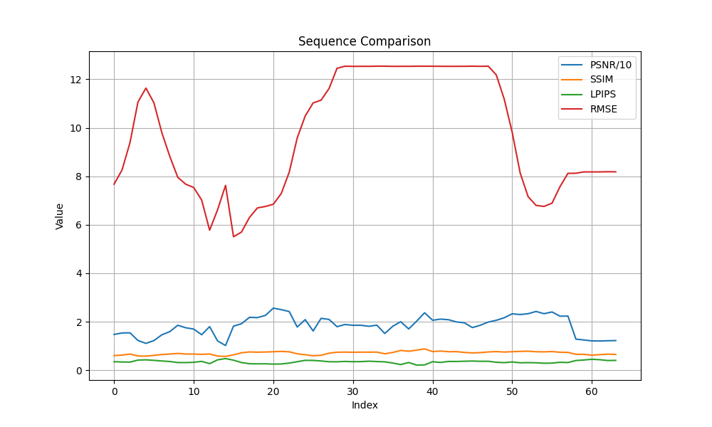
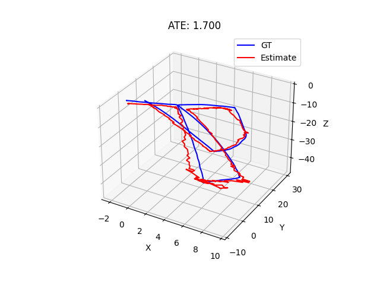
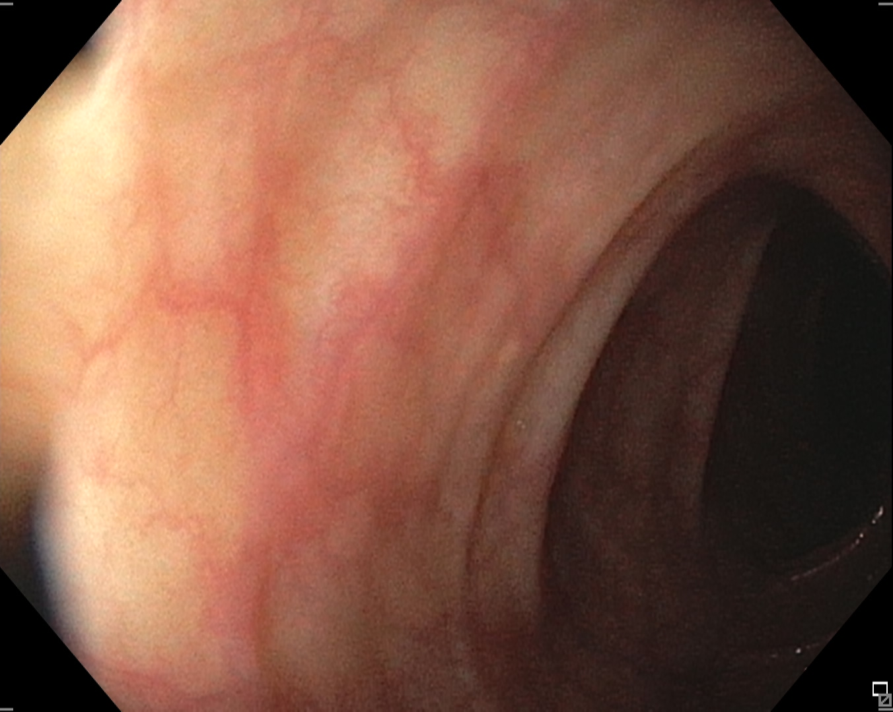
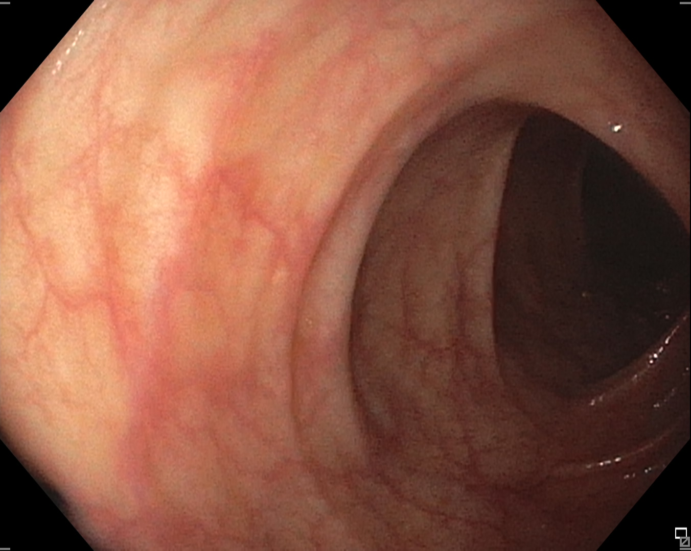
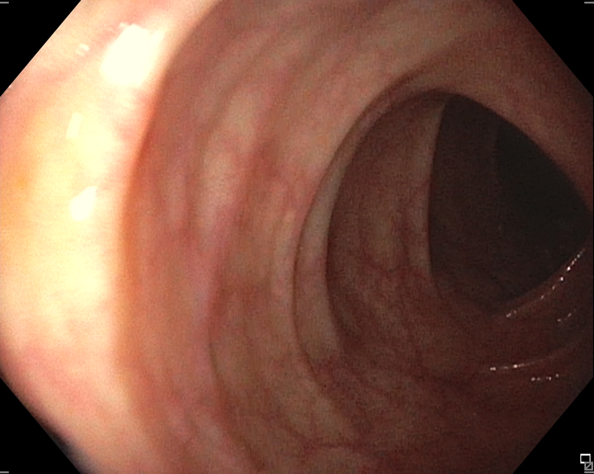
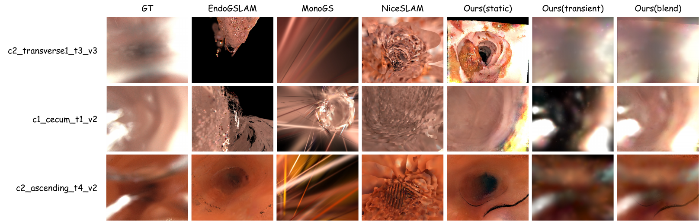
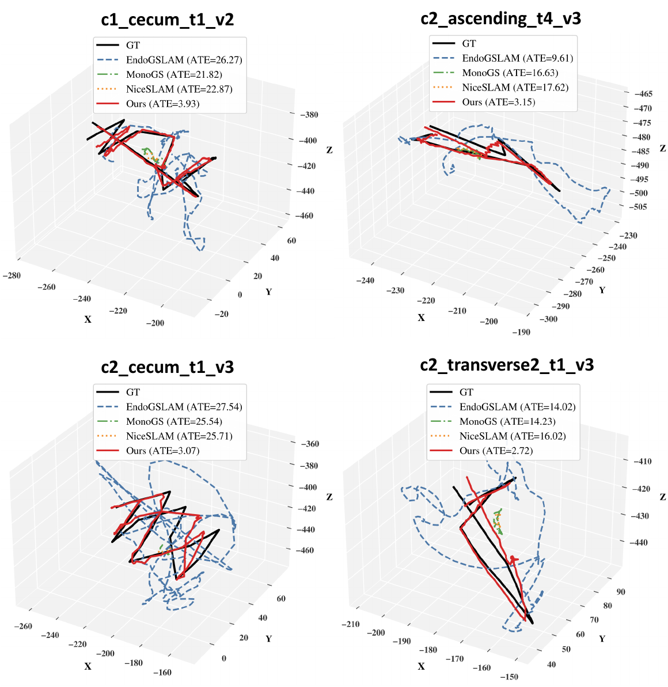
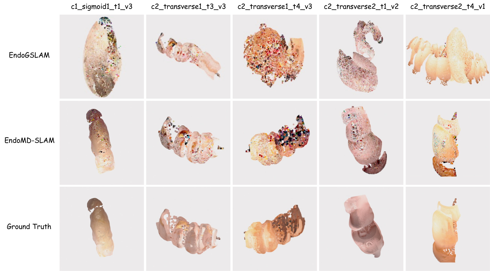

Temporal Memory
Stores reliable keyframes, retrieves recovery candidates, and relocalizes after degraded intervals.
Memory and Static-Transient Decomposition for robust online endoscopic reconstruction and tracking.

Sequence 01 demo: online reconstruction and tracking behavior under degraded endoscopic observations.
Dense 3D reconstruction is critical for clinical endoscopic navigation and documentation. While Gaussian Splatting SLAM systems show promise in this domain, they rely on multi-view photometric consistency, which is severely violated by intermittent optical degradations such as moving debris and water flushing. Standard systems can fuse camera-attached artifacts into persistent 3D geometry, causing tracking drift and irreversible map corruption.
EndoMD-SLAM maintains stability under optical degradation with two coupled mechanisms: a memory-driven gate that detects unreliable observations, suspends unsafe map updates, and relocalizes from historical keyframes; and a self-supervised static-transient decomposition that absorbs visual contaminants into a transient field while protecting the persistent anatomical map. On a degradation-focused colonoscopy benchmark, EndoMD-SLAM reduces absolute trajectory error by 91% and improves rendering fidelity by 9.9 dB PSNR.

Stores reliable keyframes, retrieves recovery candidates, and relocalizes after degraded intervals.
Suspends static Gaussian updates when tracking evidence is unreliable, preventing map corruption.
Separates static anatomy from transient lens artifacts using a self-supervised two-field representation.
EndoMD-SLAM is evaluated on a degradation-focused C3VDv2 benchmark containing sequences tagged with water and debris on lens.
| Method | PSNR ↑ | SSIM ↑ | LPIPS ↓ | RMSE (mm) ↓ | ATE (mm) ↓ |
|---|---|---|---|---|---|
| MonoGS | 6.39 | 0.298 | 0.681 | 35.92 | 15.88 |
| EndoGSLAM | 8.16 | 0.335 | 0.628 | 26.21 | 35.91 |
| NICE-SLAM | 14.20 | 0.406 | 0.725 | 20.01 | 13.57 |
| EndoMD-SLAM | 18.06 | 0.606 | 0.416 | 7.22 | 3.02 |








conda create -n endomd-slam python=3.10 -y
conda activate endomd-slam
pip install -r requirements.txt
python scripts/run_endomd_slam.py configs/c3vd/endomd_slam_c3vdv2.py \
--basedir data/C3VDv2 \
--sequence c1_cecum_t1_v2 \
--workdir outputs/endomd_slam_c3vdv2 \
--run_name c1_cecum_t1_v2@article{endomdslam2026,
title={EndoMD-SLAM: Endoscopic Gaussian Splatting SLAM under Optical Degradation with Memory and Static-Transient Decomposition},
author={Chen, Nuo and Ni, Kangqi and Liu, Lulin and Ivatury, Joga and Ding, Ying and Alambeigi, Farshid and Chen, Tianlong and Fan, Zhiwen},
journal={Manuscript},
year={2026}
}